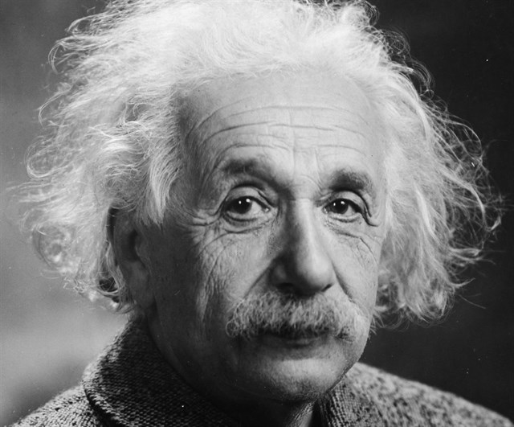

Albert Einstein
The scientist who changed the world.

A photo of Albert Einstein
There is a timeline of his life
1879 - Einstein is born in Ulm, Germany
1880 - He moves with his family to Munich
1896 - Einstein graduates from high school at the age of 17
1898 - Falls in love with Mileva Marci, his classmate at ETH
1900 - Physics degree from ETH
1902 - His daughter Lieserl is born. He takes a job at the Swiss Patent Office
1903 - Marriage with Mileva
1904 - His son Hans Albert is born
1905 - Einstein publishes his Special Theory of Relativity
1908 - Starts teaching at the University of Bern
1909 - He becomes Associate Professor of theoretical physics at Zurich University
1910 - Eduard, his second son is born
1911 - Professor of theoretical physics in Prague
1913 - Professor of theoretical physics at the Federal Institute of Technology in Zurich
1914 - Separates from his wive. Signs anti-war “Manifesto to Europeans”
1915 - Completes his General Theory of Relativity
1916 - General Theory of Relativity is published
1917 - He is Appointed Director of Kaiser Wilhelm Institute for Physics in Berlin
1919 - Einstein and Mileva divorce. He marries his cousin Elsa
1921 - Lectures at Princeton University on the theory of relativity
1922 - Einstein is awarded the Nobel Prize in physics for 1921
1924 - Start of the “Einstein-Institute” in Potsdam
1927 - Begins his work on quantum mechanics with Niels Bohr
1933 - Einstein leaves Germany and emigrates to U.S. He assumes a post at the Institute for
Advanced Study in Princeton, New Jersey
1935 - Einstein-Podolsky-Rosen paradox is published
1936 - Elsa Einstein dies
1939 - He warns president Roosevelt that Germany might build an atomic bomb.
1940 - He becomes a citizen of the U.S.
1949 - Mileva dies
1952 - Einstein is offered presidency of the State of Israel
1955 - Dies in Princeton Hospital at the age of 76
If you have time you should read more about him here